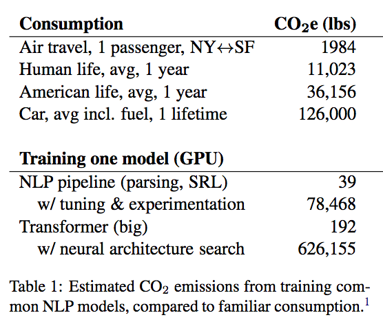
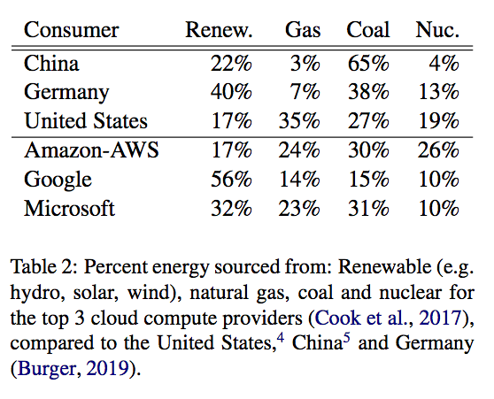

Deep Learning - Week 7
Course starts soon..
QUESTIONS
Do you have any question?
Questions can be about anything:
course, exercise, website, problems, tools..
PAPER OF THE WEEK
 Energy and Policy Considerations for Deep Learning in NLP,
Emma Strubell, Ananya Ganesh and Andrew McCallum,
in 57th Annual Meeting of the Association for Computational Linguistics (ACL). Florence, Italy. July 2019
QUIZ (15 mins)
1. If the mini-batch is smaller, is the training faster? or is it the opposite?
2. Can you describe intuitively the regularization effect of the momentum? Do we have real-life examples?
3. What is the relationshipt between Momentum, RMSProp and Adam? Is there a specific reason that should tell me which one to choose or to avoid?
DISCUSSION AND ANSWERS
EXERCISE (15-20 mins)
We go through the programming assignment that were planned for this week.For the next week